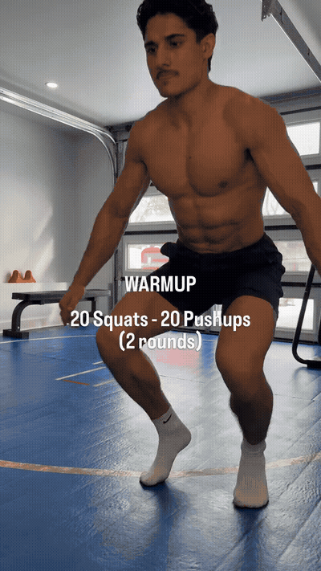
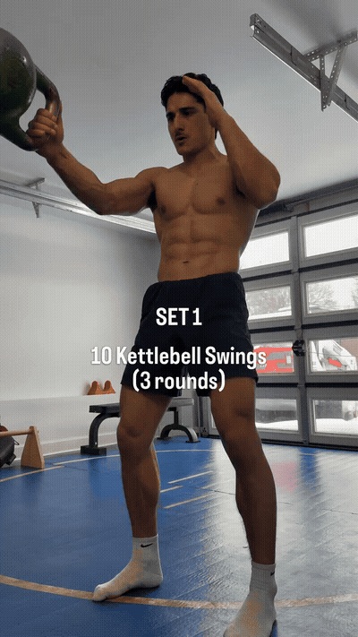
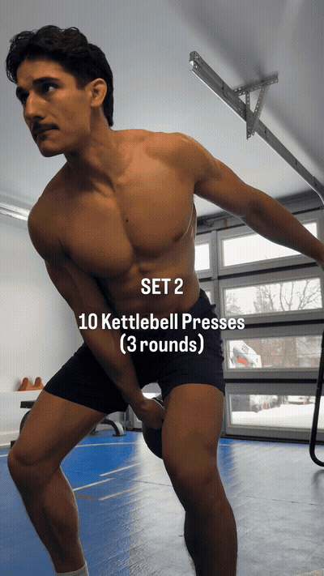
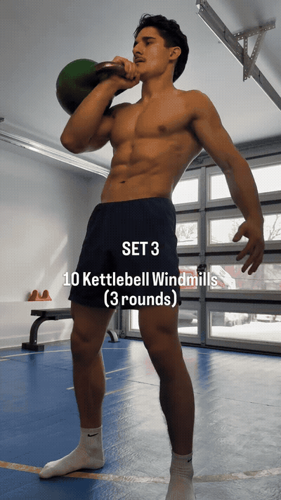
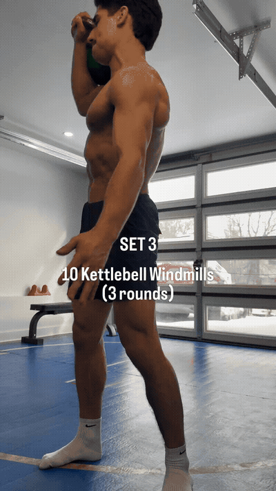
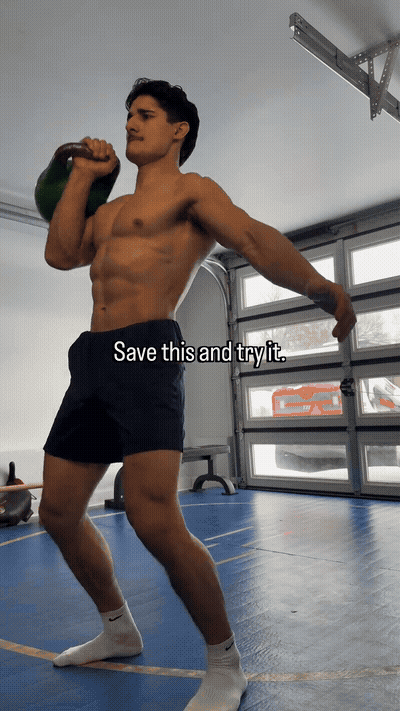

The bodyweight primer: 20 squats then 20 pushups, back-to-back, for 2 rounds. No rest between exercises — the warm-up IS the work.

The first KB exercise: 10 swings per arm, 3 rounds. Hinge at the hips, snap through the glutes, control the bell.

Strict press from the rack position, 10 per arm, 3 rounds. Lockout at the top, controlled descent.

The windmill: bell locked out overhead, hips drive to the side, hand reaches toward the floor. 10 per arm, 3 rounds.

Pushup position, one hand on the bell, row the other bell. 10 per arm, 3 rounds. Anti-rotation core work.

Marco's rule: pick a weight you can control, keep rest short, and get the job done. With 70 lb, 'at the end of that is rough.'
One bell, full body. The four exercises hit every major movement pattern: hinge (swings), vertical press (presses), lateral stability (windmills), and anti-rotation pulling (renegade rows).
Warm-up IS the work. The 2-round bodyweight primer (20 squats + 20 pushups) isn't just prep — it's a mini-workout that gets you moving before the bell comes out.
Control beats weight. Marco's rule: pick a weight you can control. With 70 lb, 'at the end of that is rough' — the challenge comes from the volume and the movements, not from maxing out.